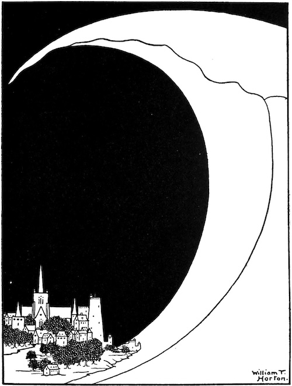
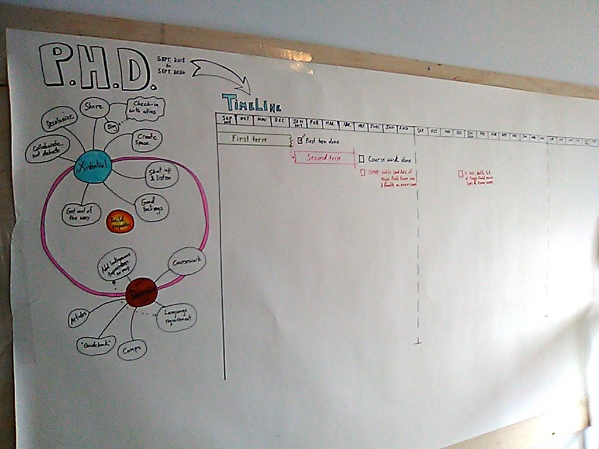
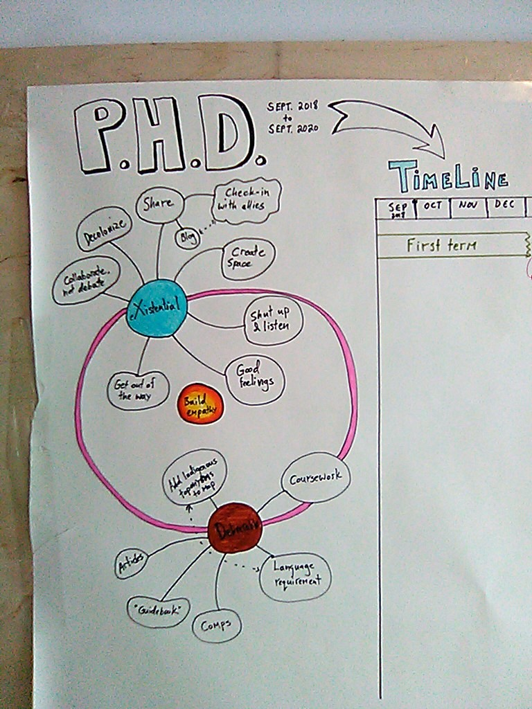
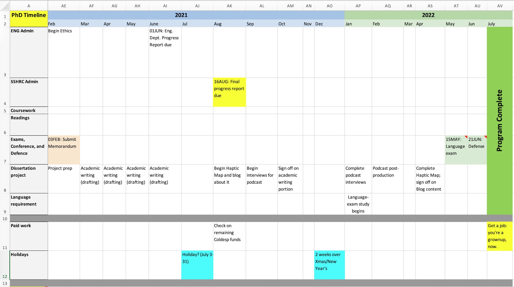
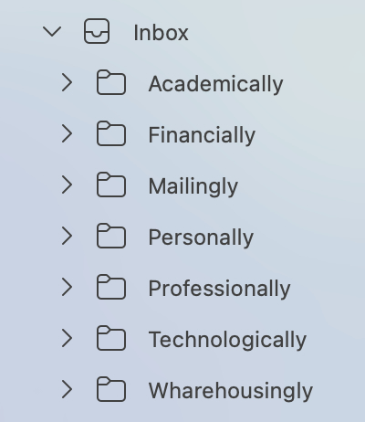
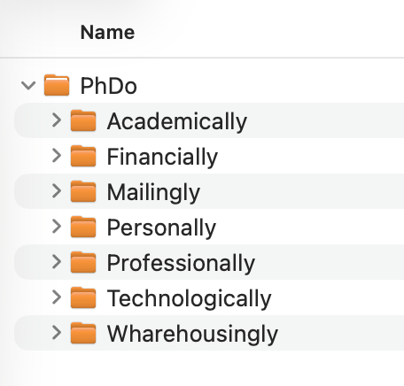
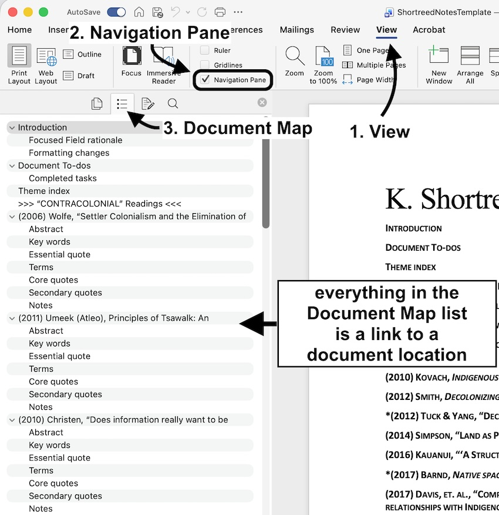
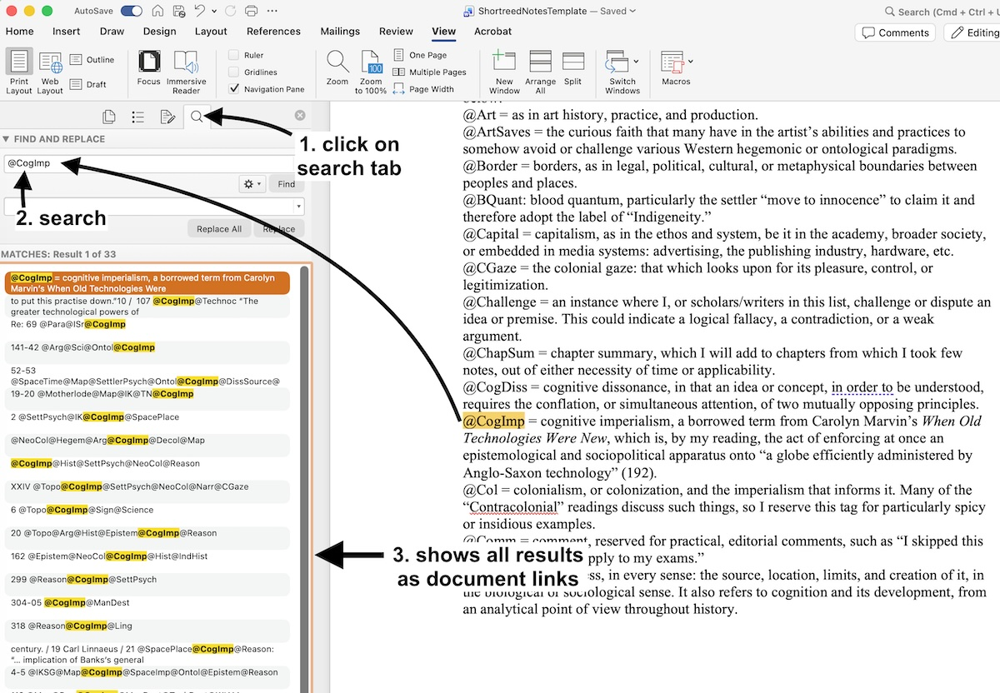
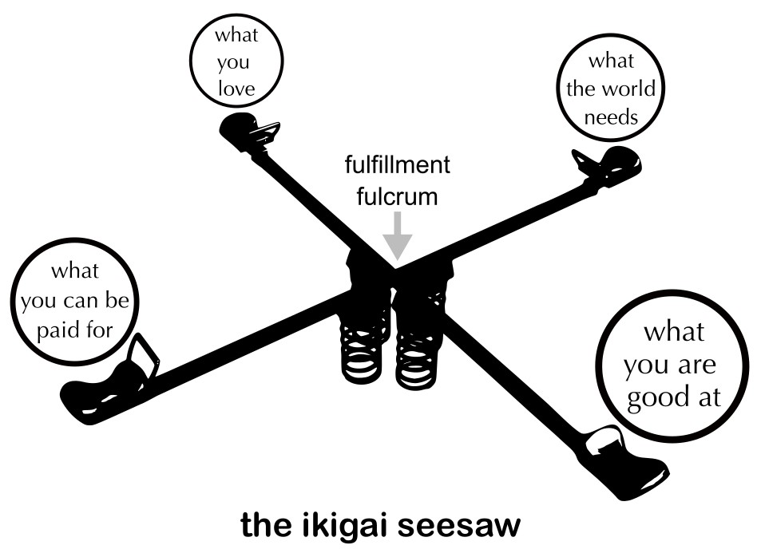

Some tips for surviving PhD overwhelm

Blah, blah, blah... just imagine an introduction about why all this matters. It obviously does to you, and me, and for all kinds of reasons, or neither of us would be here.
This is all written from a University of Victoria (UVic) perspective. But, much of what I discuss applies to all graduate programs and universities.
Oh, and these reflections and considerations are based on my experiences and my opinions; they do not in any way represent where I work or completed my degrees—and the same applies to the people associated with either. Also, nobody is paying me to write this. As if that would ever happen. Hopefully, you will find some of this useful.
Now, let's get to it.
Pulling the chute: options for tactical bailouts
You might reach a point when your body tells you that you have had enough attrition, whatever that means for you....
More...
Context
Statistics Canada's data from 2018—the latest data available for this stat—shows that roughly 50% of doctoral degree students graduate after six years, which leaves roughly 50% of us either grinding onward or bailing.
I cannot emphasize this enough: you are not alone, and there is nothing wrong with you if you have had enough. PhDs are extreme experiences on the psyche, body, relationships, and wallet. It would be more strange if you did not experience debilitating stress at times.
When I first started my program, I heard about people who quit. I harboured some judgement about this. Not damning, but more musing: what stopped them from finishing? Did they have crappy supervisors? Did their funding dry up? Then I did my rounds of comps, two written and two oral exams, and I got it. I so got it.
I almost quit my program twice. I was poised to send in an articulate and emotive email about it both times, with all the classic platitudes and gratitudes for everyone's understanding.
Besides the most patient partner on planet Earth, who would support me either way, two things turned it around: (1) I booked multiple sessions with a UVic counsellor, and (2) I realized that I could take a leave of absence. Just knowing that this last approach was an option took some pressure off. Like bear spray in the woods, you know you have it if you need it.
Resources
1. UVic's Mental health website: this site links you to all kinds of resources, many of which are free if you are a UVic student. You can book an in-person appointment or use the SupportConnect service, which can happen remotely. You might not get something out of it right away, but I found just being able to talk to someone consistently to be very helpful in itself. You never know until you try.
2. UVic's Leave of absence website: leaves of absence come in flavours, such as personal leaves, and leaves for medical, parental or compassionate reasons. Schools are bureaucracies, so of course there are rules and deadlines, but a leave is an option other than quitting outright. In the grand drama of your life, taking a year off to rest and reset will later seem like a mature choice, not a fault.
Slaying, or at least appeasing, the procrastination dragon
The procrastination dragon has a variety of melee attacks, but also some powerful spells, like Greater Distraction, and Indulgence Suggestion....
More...
Context
Binge watching the extended versions of Lord of the Rings, monthly? Decided suddenly to become a luthier? Then you have failed your Wisdom saving throw and the procrastination dragon has you enthralled.
Wait, did you just lookup what a luthier is while halfway through reading this?
This section is long because procrastination is complicated. Also, I am addressing this from the level of your overall feeling of being in your current PhD program.
Procrastination means different things to different people. I do not define it as lack of disciple, mostly because I have unusual opinions about the concept of discipline, which I discuss a little, below.
Whatever procrastination means to you, I would define it as when you are in the practice of putting things off to the last minute despite, and this is key, having the means and time to do otherwise.
This Psychology Today article lists a number of psychological drivers for procrastination. Maybe some of those reasons will resonate for you. I do not believe that labels are helpful in this context, and it's important to remember the distinctions between your behaviours and your identities. You are not a procrastinator. Rather, you are procrastinating.
And, my fellow ADD-brain peeps know that procrastination is not necessarily linked to executive function—I don't have time to get into this here, so check out the helpful two-part Ologies episodes on ADD, on alie ward's website.
The way I see it, procrastination has two overall varieties: (1) you procrastinate when you are underwhelmed, (2) you procrastinate when you are overwhelmed. Let's deal with each in turn.
1. Underwhelmed procrastination
This one is tough to address. It happens in moments when you have realized that school goes on long after the thrill of learning goes on.*
Sadly, universities have yet to come up with a PhD program in Doing Fun Things All the Time. No matter what program you take, there will be periods when you question your choices. There will be moments when you have study remorse: when you take a class or research something that turned out to be way less interesting than you thought.
When you get underwhelmed, I suggest two approaches: (1) check in with your core values, and (2) follow curiosity over expectations.
What I mean by core values is all the big stuff that got you into being in your program, or even post-secondary studies in the first place. You can even incorporate these values into your planning, as I talk about, later. Let's be clear, here: "my parents wanted me to school" or "I wasn't sure what else to do" only works for so long.
I mean the consistent, unapologetic core values in your bones, the things you have known about yourself, or observed in yourself since you can remember. We're not all lucky enough to know in our teens and twenties exactly what we want to do and be when we grow up, and that's OK. I am still figuring it out and I am, like, 111 years old.
But, I know I still hate racism. I know that seeing people put others down for just trying to be more fully themselves makes me deeply sad and misanthropic. I know that taking no action on these things, even in some small way, eats my guts hollow. I know that the world needs, and I mean really needs, more art. I know that empathy is a practice, not an abstraction.
So, if your core values get lost in the fog of the academy's expectations and approval mechanisms (grading, supervisor praise, funding awards, etc.), then check in with yourself.
Remember that this section is about managing procrastination. If you find your values misaligned with your academic choices then do not expect motivation. Arguably, doing something that you do not find satisfying or valuable can amplify the overwhelm. But, you have options, and know that most people love to help people that are truly motivated to learn something. Curiosity is the point on the compass that gets you out of expectation purgatory and into motivation land.
In the Random tips section of the What am I doing when I am doing grad school writing? page, I write "when you get stuck, follow curiosity, not expectations." What I mean by this is that no matter what you are doing, try to find what you are actually curious about in the journey. This is true of writing, research, and of your program, generally.
* This is not a play directly on the lyrics of John Mellencamp’s 1982 hit, "Jack & Diane," but rather a painfully hipster reference to Built to Spill's use of Mellancamp's lyrics in their 1999 song, "You Were Right," which has a suitable mood for PhD overwhelm. I take this song as an anthem to carrying on together and for each other, in all our glorious frailty, in the face of human suffering. Welcome to the club.
Resources for when you're underwhelmed
1. Check in with your core values by doing an Enneagram test. The goal is not to categorize yourself, as that would be ridiculous and counterproductive, especially since our minds our more like water than stone. But, you can use this test as a way to rediscover, despite life's inevitable changes, the places where you tend to spend time in your inner territories. Then, you can see how your values align or misalign with your academic choices.
2. Talk openly and honestly with your supervisor(s) about your concerns. I get that not everyone has healthy supervisor relationships. But, ask yourself if things will magically get easier if you stay on the same path and say nothing. If you do not have that kind of relationship with your supervisor(s), or if you do not trust them, then talk to your department's Graduate Advisor: here's UVic's list of them by department. All the above have usually seen it all before and might have some ideas you have not considered.
3. Make an appointment with academic advising and see what your options really are, as opposed to what you imagine them to be. You might be able to mix and match things in a way that you had not considered. For example, you could work with your department to get authorized to take more courses outside your usual field. Or, maybe you can stay an extra semester to take a graduate co-op term in a place or field that interests you. After all, UVic's Co-op program advertises itself as having "the largest graduate co-op program in Canada."2. Overwhelmed procrastination
This variety of procrastination is easier to address, practically speaking. If you are in the habit of procrastinating because you are overwhelmed all the time, then finding a planning method that works for you will eventually create a new habit.
And, let's get ahead of this right now. For those of you convinced that you produce your "best work" when you feel a crushing deadline, I don't buy it. I especially don't buy it if you have not applied consistent planning for a year to see the difference. Worst case is that your sympathetic nervous system dials down, and you have fewer typos because you had time to copyedit your work properly.
Being overwhelmed in a PhD program makes sense. It doesn't help that pretty much everyone around you is a last-minuter, including your professors. It has likely already occurred to you that these people are not healthy examples of balanced lives.
The academic ecosystem is one of neurotic attention to looming deadlines; it is a world of endless expectations to produce and do more. Like elite athletes, academics get good at one thing and are often hapless at most else. But, we can take a practice from elite athletes. As matter of survival and success, they learn to package huge goals into manageable and achievable kilometre-stones (I would write "milestones," but Canada is on the metric system. Well, mostly).
Every mountain looks impassable if you fixate on the top, so practice on focusing on the few steps ahead of you and ignore the rest for now. Here are some approaches I found actually useful.
Resources for when you're overwhelmed
1. Get creative and analog and make your own timeline. I spiraled into overwhelm and ennui early in my coursework. It all felt so big and I felt so small. So, before I made the digital version of this timeline (the spreadsheet I link to, below), I bought a large roll of paper and covered a wall at home in a hand-drawn timeline of my whole program. I am a visual learner, so this really helped me to draw things out and have something tactile and aesthetic to work on. Here's what that looked like once I got started:

Notice the section on the left that looks like connected blobs orbiting around something orange.

One blob is the existential goals for myself. The other is for my actual deliverables, that is, the outputs and requirements of the program that I would have to achieve or hand in. Both blobs orbit around the larger goal for my work and life: to build empathy.
This all sounds sanctimonious, now, but it was a way to keep me on track when I hit forks in the road. I was working on, among other things, ways to deconstruct and critique the ongoing colonial project's violent and dehumanizing treatments of Indigenous and First Nations Peoples, particularly through the lens of toponyms, or place names. I was often disgusted and angry, but when I drifted into ranting in my writing, I would ask myself if what I was producing was building or destroying empathy.
2. Use my custom timeline spreadsheet, or Gantt chart, to make your own. This is the digital outcome of the analogue timeline, above. One way to counterspell procrastination overwhelm is to pick a rough completion date for something and work your timeline backwards.

Most of the things in my take on a Gantt chart are self explanatory. I want to point out that the goal of this chart is to have everything in your program in one place. So, if you add a deadline for, say, a funding report due next year, then include a link to that report in the note of the cell. The same is true of the policies or rules that relate to your program. In essence, I converted my department's Graduate Handbook into a timeline format. For example, when I set a rough date for my defense, I added a note that was, verbatim, from the Graduate Handbook's policy on defenses.
You need not include everything in your timeline. Focus on (1) what you are being asked to actually produce or deliver, and (2) its dependencies (such as needing to complete a language requirement in order to graduate), and (3) roughly when something is due. As a bonus, you can add other schedule commitments, like conferences and work.
Because program deadlines shift for all kinds of reasons, try to keep your timeline up to date and engage with it regularly. Also, set your level of granularity at something that makes sense for your program and schedule.
I worked at the month level, as there was rarely need to do otherwise. Get too zoomed in, like at the week-by-week or day-by-day level, and you will likely just end up adding needlessly to your workload. Again, the goal of this chart is to have everything in your program and work life in one place. Over time, the act of visiting this chart will foster an internal narrative that you are on track. And, that feeling will result in feeling less overwhelmed. Results may vary.
I will close this long section on procrastination by subjecting you to my annoying opinion on discipline. That is, I do not believe that discipline is (as) necessary if you make choices that work for you. Discipline, at least in the conventional sense, can mean that we are living perpetually in resistance to, or tolerance of, something.
Yoda was right: there is no try. Only do. This is easier said than done, and takes a daily practice. That's why the final section of my guide is on taking care of yourself properly.
Outpace the havoc hyena: make a method for your content madness

The havoc hyena feeds on chaos in your emails, folders, files, and notes....
More...
Context
This section is about managing the onslaught of information you get while in a PhD program, from emails to reading lists, and everything in between.
I remember clearly talking to a fellow student about a recent flurry of departmental emails we had been getting. Most of the emails were about upcoming conferences, workshops for new teacher's assistants, and other admin stuff. I'll never forget their face when they turned to me, eyes like saucers, and admitted that they had stopped looking at those emails a year ago. When I asked why, they said that it was all just too much. They let it go for a while, and now their inbox was an expectation hellscape.
Over the course of time, I noticed that my information came at me through only so many channels. So, I set about organizing and integrating ways to manage things from the high level of emails down to a line-by-line notation method for my reading list.
You know this moment: you are a good way into an essay when you remember some quote from a year ago that would be perfect support for what you are writing. For the next two hours, you gradually turn into a lightning ball of frustration trying to find it. You go with a lesser quote, and this haunts you for the rest of your life.
To prevent information and information-synthesis problems, you can apply themes and categories that make sense to you, and integrate these themes and categories into to everything to do with your communications, file management, and writing process. Here's how I did it.
Resources
1. Create thematic folders in your email service. The themes, or categories, of these folders need not be perfect to start with. I refined mine over time. After a while, I knew I was on track when every email I received had a folder to call home.

Note that each of the folders can have as many subfolders as needed. Also, note that the folders are sorted alphabetically. I did the same for my file folders, below, because then things are consistent. Alphabetization is a meta-organizational technique: if you know that you always alphabetize, then that will help you find things more easily later.
Resist the urge to create a "miscellaneous" folder. For a while, and following my eccentric spelling convention, I had a "Miscellany" folder. You can probably already guess what happened. Soon enough, that folder became a hodgepodge of forgetting, and I was working against my intentions. It's almost like I'm human(!).
Pro tip: use email filters judiciously. For a while, I setup email filters so that any mailing list emails would bypass the inbox and go to their respective subfolders in the "Mailingly" folder. It wasn't long before I was ignoring important emails. These folders are not about hiding from the overwhelm: they are about taming the overwhelm.
2. Create thematic folders in your file storage service.
As you did for the email folders, do the same for your file folders. Your file folders should have the same names as your email folders. The plan to curb the overwhelm is to integrate your content across services. Over time, you will get in the habit of placing the same kinds of content in the same kinds of places.

Finally, remember to backup your content regularly in at least two places. Set a calendar reminder to do this every two weeks, or whatever you're willing to risk. I could write a whole paper on which backup services to use and why. Just make sure you have at least one backup in a cloud storage service and another on a portable drive.
3. Gather all your reading notes into one big Word document.
This tip calls back to the first random tip in the first writing tips page: "use Word (not Scrivener, Markdown, XML, etc.)."
I am not a fan of Word. Who is? But, like it or not, everyone will have to use it at some point for their work. I wasted a bunch of time early in my dissertation writing phase trying to find workarounds.
I tried Markdown, LaTex, and about a dozen writing apps promising to "simplify" the writing process. I even thought I would hone my XML chops and learn to write XSLT transformations, so that I could output PDFs or Word docs on the fly (ahem, see my section on "Slaying, or at least appeasing, the procrastination dragon").
Pick your battles. In the end, Word was all I used because my committee members and external readers, and everyone else besides, wanted Word docs. In a pinch, and for drafting, you could use Libre Office Writer, but I found the way it handles footnotes to be crazymaking.
I was going to write a bunch of details about how I did notes for my reading list materials (I was a humanities student), but it's easier to just give you (nearly) all the notes I took for my "focused field" readings...
WARNING: if you are currently in a foggy patch of information overwhelm, then be warned that this will look hectic at first glance: Shortreed Notes Template.
Most of that document is self-explanatory, but where it really shines is when you use a particular view setting. In Word's main menu, (1) select View, (2) select the Navigation Pane checkbox, (3) in the Navigation Pane (this will appear as a left window) click on the Document Map tab. Here's a screenshot of the whole process:

Note that I added a "Section template" at the bottom of the document, which adds some prompts to show you what types of content I added under each heading.
What I liked about this approach was that Word could handle large files size without getting too laggy. I had another such notes file that was closer to 400 pages and it still scrolled well, and the search worked reasonably quickly. I had done something similar in Google Docs, but it got super glitchy and laggy at anything over 100 pages, regardless of my internet connection and computer power.
Pro tip: make your notes font the same font type and size you use for your essays. This will make things seamless when you copy/paste quotes over into your working drafts.
Final pro tip: to paste content into Word, but strip it of formatting (fonts, layout, size, etc.), use this keyboard shortcut: Ctrl + Shift + V (Cmd + Shift + V on Mac). This technique works when copy/pasting from text from one Word doc to another, or internet text into Word. Bonus.
4. Create a thematic tagging system for your reading notes. This is the final piece of the content-integration puzzle. Use this for when you need notes for each of your readings, on the assumption that you will eventually need thematically grouped quotes for your academic writing.
The tagging system I used was honed over time. Here's an example of one tag: @CogImp, which stands for "cognitive imperialism." Whenever I read a passage in an essay that had that theme, I copied that passage into my big notes document (you will see examples of this my Shortreed Notes Template). Then, when I needed to later, I could search on "@CogImp" and see all the results across every instance. I precede (nearly) all the tags with an @ symbol, so that I could also, if needed, search for every tag theme in my whole notes document.
I also use CamelCase, as this adds a level of search reliability. In other words, if I set my search to case sensitive, I will never get a result for "camel case," something I just might get from a 19th century desert travel diary.
Here's how to search for your theme tags: in Word's (1) Navigation Pane, (2) click on the Find and Replace tab (the magnifying glass icon), (3) add your search term, and (4) click the Find button. Here's a screenshot of the whole process:

Finally, I am not responsible for what you do with my actual notes and tags, nor am I responsible for how you react to my opinions. I obviously do not want to offend anyone, but I also wanted to show you what this all actually looks like when it's done. Besides, since nearly all of what is in there is also reflected in my dissertation, my views are already in the public domain. So, I ask in advance for your mercy and patience, like I do with pretty much every relationship I have.
Seriously: you need to use Zotero. It integrates with Word and Google Docs (you should know about the Patriot Act), and Zotero is free. I had over 700 entries in Zotero by the time I was ready to submit my dissertation, and I was still on the free version. It is an open-source project, but like Google content, be aware that your Zotero cloud content is stored in the USA. That said, you can keep local-only copies of your Zotero content: "Unless you explicitly set up syncing, your research data never leaves your computer."
UVic Libraries has an excellent LibGuide on how to use Zotero: libguides.uvic.ca/zotero
Take care of your body: it is the only ship you have
Your poor body is just trying to help you survive, and look what you are doing to it....
More...
Context
Your body is a homeostatic entity: it wants to maintain a dynamic constancy, for good or ill. Our minds and bodies adapt to whatever we do, which is helpful at times and harmful at other times. Put simply, we become what we do most. The more you fret, the more you fret. The worse you eat, the worse you eat. The more you write like this, the more you write like this. Great. Now I can't stop.
I had a conversation with one long-time academic about making sure I took proper breaks on weekends. This was their reply: "Yeah, I have heard that work/life balance can be good for some people."
Of course grad school sometimes demands extremes. This is why, in Canada, only 1.1% of the population had a doctoral degree as of 2024. But, there will be a life after school, as far off as that seems at times, and so I want you to consider what that looks like in terms of where you put your energy.
This is my interpretation on the concept of ikigai, which is one way into a broader conversation on finding meaning in your life. And, I don't mean that insufferable grift of "optimizing" your life—that stuff is mostly just vanity in a different mask. By my reading of it, ikigai is more about exploring the intersections of self-acceptance, motivation, expectations, and fulfillment, and from your truly unique perspective. There is only one you, even if you're a twin.

As you can see in the image, placing weight too much on one arm sinks it to the ground at the expense of the others. The idea is to find the fulfillment fulcrum point: the spot at which you might be wobbling, but you can mostly maintain your balance. The reason my take on ikigai rests on springs is that balance is rarely stable. That, and springs make it fun. You have one life. It doesn't always have to be about working harder.
The following resources section is intended to give you some practical and easy ways to care for yourself.
Resources
There is no particular order to this section. This list is numbered, but only to keep track of things.
1. Use the iBreathe app or the Paced Breathing app (Android). Aim for around five minutes, twice per day. Start with box breathing (the apps have that feature) and eventually create your own preferred pattern. Don't worry if you are doing it wrong or right. Try doing it to put you to sleep. It could take many sessions to get into it. But, you might be pleasantly amazed at how well just learning to breathe again can calm your sympathetic nervous system. Really, this whole PhD overwhelm guide should be replaced by asking you to watch Bhikkhu Pannakara's (of the "walking monks" fame) speech on breathing to students.
2. Visualize yourself being done. This technique is about decoupling future-thinking from stress responses and re-coupling it with feelings of relief. For example, when you get into a spiral because of an approaching exam, immediately picture that feeling of the exam being over. Visualize that lightness in the chest that comes from leaving the campus for a long summer break. Give this visualization some time to take. You are not going to unravel all your habits and tensions immediately. This is a process. What do you have to lose by trying it for a while? Worst case, you reduce your stress a little bit. Don't take my word for it. Check out the results of a study on visualizations of nature.
3. Use the Pomodoro Technique. Basically, this is a method of time management where you work in a truly focused way for 20-25 minutes, then take a 5-10 minute break. Repeat four times, then take a 20-30 minute break. I did this for nearly my entire dissertation writing process, and I was happy with how well it worked. There's a bunch of Pomodoro apps out there, but I like this online version because it is basic and does not require an app, which is great if you work on school or shared computers. Pomodoro pro tip: on your short breaks, leave the writing space entirely (get away from all screens). Move your body, or, if possible, go outside for a few minutes, rain or shine.
4. For the sighted reading this, get a good monitor. I switched to a 27" 2K (1440p) monitor with a high refresh rate (100hz, but, higher is fine) and the text became delightfully sharp and easy on the eyes. My old monitor suddenly looked like the text was coated in grease. You could try a 4K monitor, but they tend to make all your icons and folders scale absurdly small. I found 2K to be the sweet spot at 27". Trust me: you won't go back once you switch. You don't need to spend a fortune, either. For reference, Scamazon sells a bunch for under $200 CDN.
✌ please share responsibly, and with credit to Kim S Shortreed, 2026, as and where appropriate